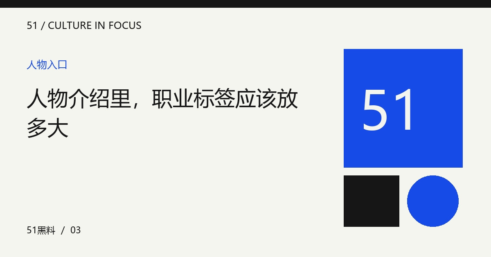

人物介绍里，职业标签应该放多大
一个称呼便于认识人物，也可能把复杂经历压成单一形象。用公开工作与具体表达，补回标签之外的部分。

标签提供起点，不提供全部答案
演员、创作者或主持人等职业称呼，能帮助读者建立最初认识，但它们不能解释一个人的所有作品与表达。人物介绍可以简洁，却不应让单一标签替代具体经历。首先确认介绍需要回答什么，再选择与问题相关的公开工作，而不是把所有印象堆在一起。
用作品与角色说明变化
同一个人在不同项目中可能承担不同职责，演出、写作和制作需要分别看待。引用公开履历时，应核对参与方式，避免把团队成果全部归给一个人。变化可以通过具体作品来说明，不必使用没有范围的逆袭、封神或彻底转型等概括。
让引语保留自己的语境
人物谈某个项目时，可能只是在解释当时的工作选择。将一句话放进人物简介，应保留对象与时间限定，不把阶段性表达写成永恒性格。编辑可以分析，但要让读者看出哪里是公开原话，哪里属于自己的观察，避免概括悄悄变成事实。
不要靠私人猜测补充层次
复杂的人物书写不等于更多私人细节。公开创作过程、合作方式和职业观点，已经可以构成丰富内容。没有证据的家庭关系或情绪推断，不会让介绍更深刻。删掉无关猜测之后，人物仍然能够通过具体工作被认识，也更便于后来修订和更新。
为一句人物简介做减法
试着为一位虚构创作者写两版简介：第一版只用职业与赞美词，第二版加入一项明确工作、一种公开表达和一个尚未回答的问题。比较哪一版让读者知道可以继续看什么。这个练习用于检验介绍的清晰度，不是替现实人物虚构履历或作品记录。
编辑演示：本文用于展示专题阅读；虚构情境不构成真实人物或事件报道。
下一篇：黑白影像里的颜色缺席，带来了什么 →